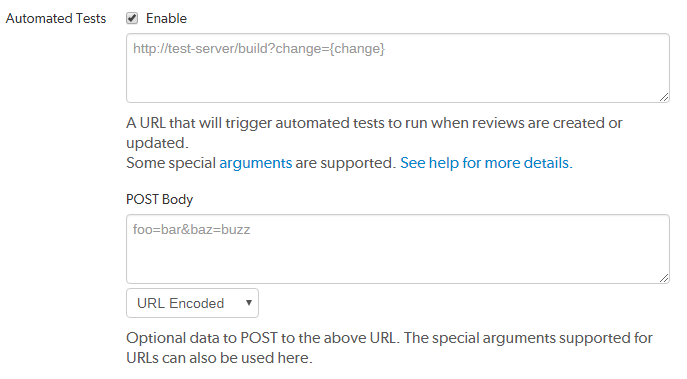
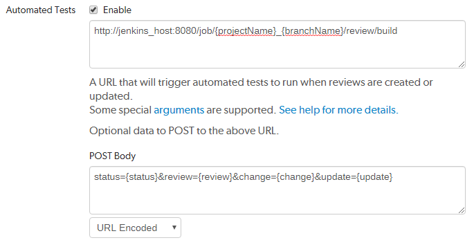
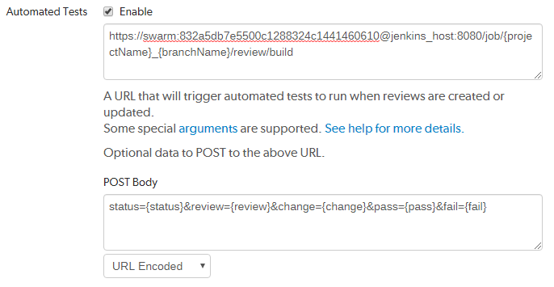

Automated testing for reviews
From Swarm 2020.1, the preferred method for defining tests is on the Swarm Tests page. This enables you to:
- Associate a test with a workflow to ensure that the test is run when a review associated with that workflow is either created/updated or submitted.
- Associate a test with the global workflow to ensure that the test is run whenever a Swarm review is either created/updated or submitted. This ensures that the global tests are enforced for all changes even if they are not part of a project.
Integrating Helix Swarm with a test suite involves enabling Automated Tests in your project's configuration and providing a trigger URL. When the trigger URL is requested, Swarm expects your test suite to be executed. When the tests complete, Swarm expects an update callback URL, a pass callback URL, or a fail callback URL to be requested by your test suite.
- Navigate to the Project page.
- Click the project Settings tab to display the Project Settings page.
- Ensure that paths in each named branch configured for the project do not overlap with paths in other named branches.
-
Automated tests checkbox: select Enable to display the configuration fields:

-
Provide a URL that triggers your test suite execution.
Special arguments are available to inform your test suite of various details from Swarm. Swarm automatically replaces the arguments with the relevant Swarm information when it calls the test:
NoteHelix Plugin for Jenkins 1.10.11 and later: Swarm must send the parameters for the build to Jenkins as a POST request. To do this, enter the parameters in the Post Body and select URL Encoded.
- {test}
- The name of the test
- {testRunId}
- The test run id
- {change}
- The change number
-
Tip
If your CI system supports change=now, you can use this instead of the change={change} to make sure your review is always tested against the latest version of the submitted code.
- {status}
- Status of the change, shelved or submitted
- {review}
- The review's identifier
- {version}
- The version of the review
- {description}
- The change description of the change used to generate this update. {description} cannot be used in the URL, it can only be used in the POST Body.
- {project}
- The project's identifier
- {projectName}
- The project's name
- {branch}
- The branch identifier(s) impacted by the review, comma-separated
- {branchName}
- The branch name(s) impacted by the review, comma-separated
- {update}
- The update callback URL. You can include any or all of the following when calling the update url to update the test run: status, messages, and a url in the body that links to the CI system for that run. They should be formatted in JSON in the body of the POST request. Status: valid status values are running, pass, and fail. Messages: you can pass a maximum 10 messages, if you provide more than 10 messages only the first 10 are saved. Each message can contain a maximum of 80 characters, any messages with more than 80 characters will be automatically truncated. {update} is the preferred option for Swarm 2019.3. For more details, see the note below.
- {pass}
- Tests pass callback URL. From Swarm 2019.3, {update} is preferred. For more details, see the note below.
- {fail}
- Tests fail callback URL. From Swarm 2019.3, {update} is preferred. For more details, see the note below.
Note- Swarm 2019.3 and later still supports {pass} and {fail}, however {update} is preferred because you can also include a message with the test status.
- {update},
{pass}, and{fail}are composed automatically by Swarm. They include Swarm's own per-review authentication tokens.
-
Optional: specify any parameters that your automated tests require that must be sent via HTTP POST in the POST Body field. The POST parameters can include the special arguments listed above.
Select the format of the POST parameters, either URL Encoded or JSON Encoded.
- URL Encoded: POST parameters are parsed into name=value pairs.
- JSON Encoded: parameters are passed raw in the POST body.
Configuring Jenkins for Swarm integration
Your Jenkins host needs to be able to communicate with the Swarm host, and the Swarm host needs to be able to communicate with the Jenkins host. Ensure that the appropriate DNS/host configuration is in place, and that each server can reach the other via HTTP/HTTPS.
-
Install the p4-plugin for Jenkins:
For instructions on installing the p4-plugin, see in the Installation chapter of the Helix Plugin for Jenkins Guide.
-
Configure a Jenkins project:
NoteHelix Plugin for Jenkins 1.10.11 and later: Swarm must send the parameters for the build to Jenkins as a POST request. To do this, enter the parameters in the Post Body and select URL Encoded.
-
Specify the job name so that it matches the project identifier used in the trigger URL, as defined below.
For example, the computed value of
{projectName}_{branchName}.Or, edit the trigger URL to use the Jenkins job name you specify.
-
Make the build parameterized to accept these parameters (note that these are named to match up with the script that is called):
- {test}
- The name of the test
- {testRunId}
- The test run id
- {status}
- Whether the changelist to be tested is shelved or submitted
- {change}
- Changelist # to run tests against
- {review}
- The review's identifier
- {version}
- The version of the review
- {branchName}
- The branch name(s) impacted by the review, comma-separated
- {update}
- The URL to POST to update the test run. You can include any or all of the following when calling the update url to update the test run: status, messages, and a url in the body that links to the CI system for that run. They should be formatted in JSON in the body of the POST request. Status: valid status values are running, pass, and fail. Messages: you can pass a maximum 10 messages, if you provide more than 10 messages only the first 10 are saved. Each message can contain a maximum of 80 characters, any messages with more than 80 characters will be automatically truncated. {update} is the recommended way of reporting test status.
- If your build script has access to any messages related to the test execution, pass the messages to Swarm using the {update} URL. Swarm uses the provided message(s) to add to the test results.
- If your build script has access to the results of test execution, include a POST parameter called url when calling the update URL. Swarm uses the provided url to link reviews to the test results. Valid test status values are running, pass, and fail.
- The {update} callback url accepts a JSON body where you can specify any or all of the following: messages, url, and status.
- {pass}
- The URL to wget if the build succeeds. From Swarm 2019.3, {update} is preferred. For more details, see the note below.
- {fail}
- The URL to wget if the build fails. From Swarm 2019.3, {update} is preferred. For more details, see the note below.
ImportantIf your test system cannot POST to Swarm, you cannot use update and you must use pass and fail instead.
NoteWhen using {update}:
{ "messages" : ["My First Message", "My Second Message"], "url" : "http://jenkins_host:8080/link_to_run", "status": "pass" }NoteWhen using {pass} and {fail}: if your build script has access to the results of test execution, include a GET or POST parameter called url when calling the pass or fail URLs. Swarm uses the provided url to link reviews to the test results.
For example: ?url=https://jenkins.example.com/view/job/<jobname>/<jobid>/
TipSwarm 2019.3 and later still supports {pass} and {fail}, however {update} is preferred because you can also include a message with the test status.
-
Select Perforce Software for the Source Code Management section.
ImportantYou might see Perforce in the Source Code Management section. This represents an earlier community-provided Perforce plugin that does not include support for Swarm.
-
Set up credentials and workspace behavior as needed.
For instructions on configuring credentials and workspaces, see the Credentials and Workspaces sections of the Helix Plugin for Jenkins Guide.
Important- If your Helix server is configured for Helix Authentication Service, the service user credentials used for automated testing must not use Helix Authentication Service.
- The client workspace configured in Jenkins must have a view that includes the paths defined for that branch in Swarm.
-
-
Configure your Swarm project to run automated tests with a URL and parameters like this:
TipIn this example, the build system is passed the changelist number of the latest version of the review in {change}. If the test is rerun at a later date, the build system will rerun the test against the same {change} number, and this will probably not be the latest version of the codebase. If you want the review to always be tested against the latest versions of submitted code, replace change={change} with change=now. Your CI system must support change=now to use this feature.

ImportantFor Jenkins, the job name needs to match the job identifier in the URL. In the example above, this is the computed value of
{projectName}_{branchName}.If you prefer a different naming scheme in Jenkins, replace
{projectName}_{branchName}in the URL above with the project name actually defined in Jenkins.ImportantIf security is enabled in Jenkins, the trigger URL needs to include credentials. Follow these steps:
- Create a Jenkins user that will trigger Swarm builds. For example swarm.
- Log into Jenkins as the new user.
- Click on the user's username in the Jenkins toolbar.
- Scroll down to API Token.
- Click Show API Token.
-
Incorporate the value of the API Token into the Swarm trigger URL.
For example, if the username is swarm and the API Token value is 832a5db7e5500c1288324c1441460610, the Swarm trigger URL and parameters should be:
